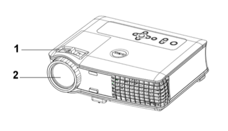
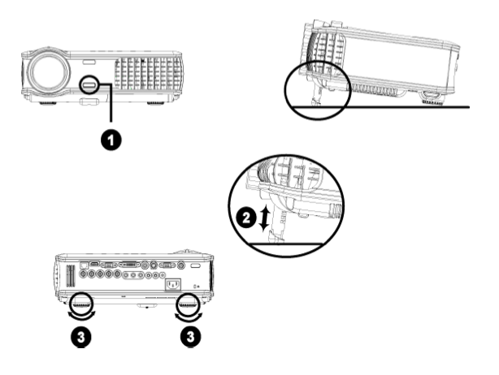

5. 调整
在使用投影仪前，可调节投影仪的高度和焦距，以获得最佳投影效果。
5.1. 调整投影仪焦距
Note: 【警告】
为避免损坏投影仪，请确保在搬动投影仪或将其放入包装箱以前变焦镜头与升降支架 脚完全缩回
旋转调焦片来放大或缩小
旋转调焦环直到图像清晰。投影仪的聚焦范围为4.9英尺到39.4英尺(1.5米到12米)。

5.2. 调整投影仪高度
提升/降低投影仪高度:
按下升降支架按钮。
升高或降低投影仪以获得所需的显示角度，然后再松开按钮将升降支架脚位置锁定。
用倾斜调整轮来细调显示角度。
